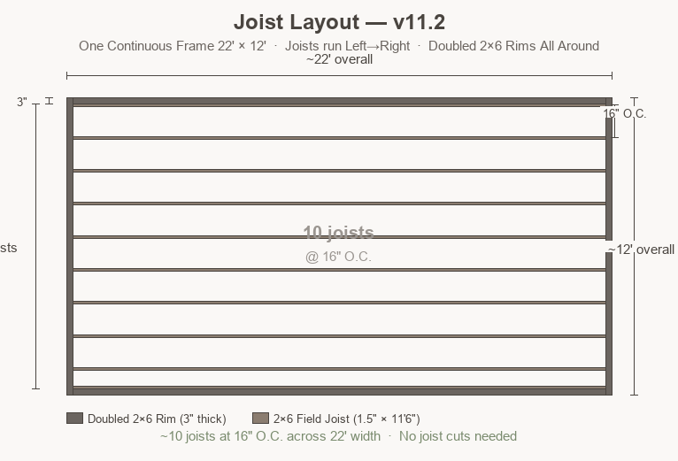
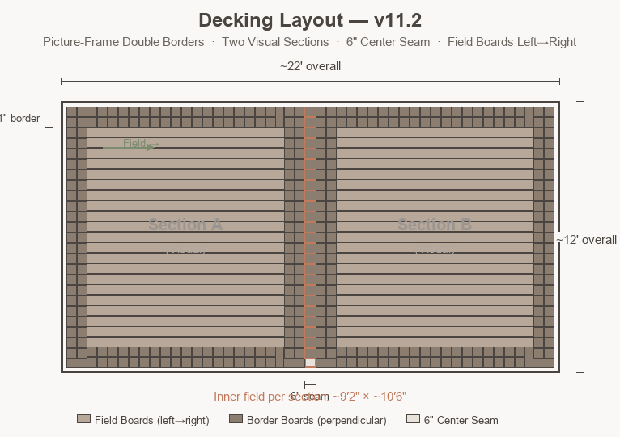

Pool Deck Framing Plan & Cut List — v11.2
📐 Design Summary
One continuous frame: 22' wide × 12' deep · Doubled 2×6 rims on all four sides · Joists run front-to-back, 11.5' length · Zero joist cuts · ~17 joists at 16" O.C.
Visual sections: Created by picture-frame double borders in decking · 6" center seam is decking-only · Inner field per section: ~9' 2" × ~10' 6"
Total footprint: 22' × 12' · Pedestals: ~55–65 total · No ledger, no curved section, no transition
012×6 Framing Plan
One continuous 22' × 12' rectangle. Joists run front-to-back at 11.5' length — no cuts. Doubled 2×6 rims on all four sides. The key win: zero joist cuts and one solid frame.
Joist Layout Diagram (One Continuous 22'×12' Frame — Looking Down)

Full Cut List — 2×6 Lumber (One Frame)
All four rim joists are doubled 2×6 (two boards face-screwed together). This makes the frame beefier, gives the border blocking something solid to anchor to, and matches the substantial look of the railings.
| Piece | Qty | Cut From | Length | Offcut / Notes |
|---|---|---|---|---|
| Back Rim Joist (doubled) | 2 boards | 2×6 × ~22' | ~22' each | Continuous — no splice · May need 2×12' or 2×14' spliced if 22' not available |
| Front Rim Joist (doubled) | 2 boards | 2×6 × ~22' | ~22' each | Continuous — no splice |
| Left Side Rim (doubled) | 2 boards | 2×6 × ~12' | ~12' each | Cut from 14' stock if needed |
| Right Side Rim (doubled) | 2 boards | 2×6 × ~12' | ~12' each | Cut from 14' stock if needed |
| Field Joists | ~17 | 2×6 × 11'6" | 11.5' (full) | None — zero cuts! |
| Mid-Span Blocking | ~16 | 2×6 offcuts/scrap | ~14–18" each | One per bay across 22' width |
| Border Blocking | ~60 | 2×6 offcuts/scrap | ~14–18" each | Every 16" O.C. under all double-row borders (all 4 sides) |
| Center Seam Blocking | ~10 | 2×6 offcuts/scrap | ~6" each | Under 6" seam, every 16" O.C. along ~12' depth |
All field joists use full stock length. The 11.5' joists need no cuts. Only the side rims need cutting if using 14' stock. The back/front rims are continuous ~22'.
22' = 264". At 16" O.C. with rim on both sides: joists at 0, 16, 32, 48, 64, 80, 96, 112, 128, 144, 160, 176, 192, 208, 224, 240, 256, and rim at 264". That's ~17 field joists + doubled rims on left and right. Clean, simple numbers.
Blocking Plan
Mid-Span Blocking
One row of 2×6 blocking at ~5.75' from back edge. Prevents the 11.5' joists from twisting and adds stiffness across the full 22' width.
- ~16 pieces (one per bay between field joists)
- ~14–18" long (bay width minus 1.5" joist width)
- Cut from 2×6 offcuts or scrap
- Face-screw to joists with 2.5" exterior screws
Border Blocking (Picture-Frame Support)
Critical support for perpendicular border boards. Installed every 16" O.C. under all border zones.
- Back edge: 2×6 pieces running left→right, every 16" O.C. · ~16 pieces · Screwed to back rim and field joist ends
- Front edge: 2×6 pieces running left→right, every 16" O.C. · ~16 pieces
- Left/right sides: 2×6 pieces running front-to-back, every 16" O.C. · ~12 pieces per side · ~24 total
- Total: ~60 border blocking pieces
- Length: ~14–18" each · Cut from 2×6 scrap or rim offcuts
Center Seam Blocking
Supports the short perpendicular boards spanning the 6" gap in the decking. The frame is continuous underneath — blocking is attached to adjacent field joists on both sides of the seam line.
- ~10 pieces spaced every 16" O.C. along ~12' depth
- Each piece ~6" long · Cut from 2×6 scrap
- Screwed to field joists on either side of the seam centerline
025/4×6 Decking Layout — Picture-Frame Double Border
Field boards run left→right. Border boards run perpendicular. Center seam boards run front-to-back. Every direction change is intentional and visually crisp. The "two sections" are created by the border pattern, not by framing.
Decking Plan (One Frame, Two Visual Sections)

Reference: Trex design tool 3D perspective view

Decking Cut List
| Component | Boards Needed | Cut Length | Notes |
|---|---|---|---|
| Inner Field (left section) | ~18 boards | ~10' 6" (from 12' stock) | ~1' 6" offcut becomes border stock |
| Inner Field (right section) | ~18 boards | ~10' 6" (from 12' stock) | ~1' 6" offcut becomes border stock |
| Back Border (double row, full 22') | ~68 pieces | ~11" each | 2 rows × ~34 pieces · Run front-to-back · Across full 22' width |
| Front Border (double row, full 22') | ~68 pieces | ~11" each | 2 rows × ~34 pieces · Run front-to-back · Across full 22' width |
| Left Border (double row) | ~28 pieces | ~11" each | 2 rows × ~14 pieces · Run left→right |
| Right Border (double row) | ~28 pieces | ~11" each | 2 rows × ~14 pieces · Run left→right |
| Center Seam | ~24 pieces | ~6" each | Run front-to-back across 6" gap · ~24–26 pieces total |
| TOTAL field boards | ~36 | — | Cut from ~36 full 12' boards |
| TOTAL (all decking) | ~50–55 boards | — | Field + border stock + seam pieces |
Inner field depth per section is ~10' 6" = 126". Each 5/4×6 board is ~5.5" wide + ¼" gap = 5.75" effective. 126" ÷ 5.75" = ~21.9 rows. Adjust gap slightly (⅛"–¼") to land clean without ripping the last board. Border rows are 11" deep = 2 rows of 5.5" boards.
Each 12' field board yields one ~10' 6" field piece + one ~1' 6" offcut. Each ~1' 6" offcut yields ~1–2 border pieces (~11" each). With ~36 field boards you get ~36–72 border pieces from offcuts. Additional border pieces come from extra 12' boards cut specifically for border stock. Plan your cuts so offcuts are clean and straight.
03Border Blocking Layout
The picture-frame border only works if every short perpendicular board has solid support underneath. Here's the blocking plan.
Back Edge Border Blocking
Side Edge Border Blocking
Border Blocking Summary Table
| Location | Pieces | Length | O.C. Spacing |
|---|---|---|---|
| Back edge | ~16 | ~14–18" | 16" |
| Front edge | ~16 | ~14–18" | 16" |
| Left side | ~12 | ~14–18" | 16" |
| Right side | ~12 | ~14–18" | 16" |
| Total border blocking | ~56 | — | — |
Without blocking, each ~11" border piece is only supported at one end (the rim). The free end will flex under foot traffic, eventually crack, and always squeak. The 2×6 blocking takes 15 minutes and makes the border feel as solid as the field.
04Pedestal Placement Plan
~55–65 pedestals total. You have 38 on hand (mix of ECO M and L). Need to buy ~20–25 more.
| Location | Pedestals | Model | Approx Height |
|---|---|---|---|
| Field joists (×~17) | 2–3 per joist = ~40 | ECO M (1.4"–2.6") | ~0.5"–1" (low, just leveling) |
| Rim joists + corners | ~12 | ECO L (2.6"–5.1") or M | ~1"–2" (corners may need more lift) |
| Blocking points | ~6 | ECO M | ~0.5"–1" |
| Center seam | ~5 | ECO M | ~0.5"–1" |
| GRAND TOTAL | ~55–65 | — | 38 on hand → need ~20–25 more |
For 2×6 joists at ~11.5' span, use 2–3 pedestals per field joist (one near each end, one mid-span if needed) plus extras under rim and blocking. The 11.5' span is fine with 2–3 supports for foot traffic.
05Summary: Build Day Cut Order
Stain everything first, then cut. Here's the order:
- Back/front rims: Source four ~22' 2×6s (2 back + 2 front, doubled). If 22' stock unavailable, splice two ~12' boards with 2' overlap and structural screws. These are continuous — no break at center.
- Side rims: Cut four ~12' 2×6s (2 left + 2 right, doubled). If using 14' stock, cut to ~12'.
- Field joists: Use ~17 11'6" 2×6s at full length. NO cuts needed!
- Mid-span blocking: From offcut pile, cut ~16 pieces: ~14–18" each.
- Border blocking: From offcuts/scrap, cut ~60 pieces: ~14–18" each.
- Center seam blocking: From scrap, cut ~10 pieces: ~6" each.
- Field decking: Set aside ~36 full 12' boards. Cut each to ~10' 6". Save ~1' 6" offcuts for border stock.
- Border decking: Cut offcuts and extra boards into ~11" border pieces. Need ~192 border pieces total. ~36 offcuts yield ~36–72 pieces. Additional ~120 pieces from ~10 extra boards.
All cuts get stain on the fresh end grain BEFORE assembly. End grain drinks stain — hit it twice. The offcuts for blocking also need their ends sealed if they'll be exposed.
📊 Stock Check
2×6 (11'6") used: ~17 pieces for joists + 4 pieces for side rims = ~21 total. Check your stock.
2×6 (~22') used: 4 boards (2 back + 2 front, doubled). May need to splice shorter stock.
5/4×6 decking used: ~50–55 of ~54 boards → tight but doable. Plan cuts carefully.
Pedestals: ~55–65 needed, 38 on hand → buy ~20–25 more (recommend ECO M).